Memorization in
Diffusion Models
Detection, sharpness, CLIP embeddings · with LLM preview
Albert No · Yonsei University
2026
Contents
Why Memorization Matters
Lawsuits, Anthropic settlement, the central question
The Central Question
Generator $f_\theta$ trained on corpus $\mathcal{D}$, sample $x \in \mathcal{D}$.
Can a query recover $x$ verbatim?
Memorization: training samples resurfacing through prompts.
Distinct from generalization. Distinct from membership inference.
Three Stakeholders
Privacy
PII, medical records, secrets.
Copyright
Books, code, news, images, characters.
Security
Canaries, credentials, system prompts.
Memorization is the empirical signature of all three risks.
Live Lawsuits (2023–2026)
- Bartz v. Anthropic: $1.5B settlement, pirated books
- NYT v. OpenAI: verbatim article reproduction
- Authors Guild v. OpenAI: copyrighted books
- Getty v. Stability AI: watermark regurgitation
- Disney v. Midjourney: character likeness
- Andersen v. Stability AI: class action, training art
Extracted reproductions as direct evidence.
Bartz v. Anthropic — $1.5B
What happened
Claude trained on LibGen and PiLiMi books.
Judge Alsup (N.D. Cal., June 2025): legally-acquired books are fair use; piracy is not.
Settlement
$1.5B class action: largest copyright payout on record.
~500K books, ~$3K per title.
Liability attaches to data provenance, not only to model output.
Two Lenses on the Same Signal
Copyright
- Question: a protected work reproduced?
- Evidence: verbatim extraction $\Rightarrow$ derivative use
- Targets: books, news, code, characters, style
- Damages: per-title statutory fees
Privacy
- Question: personal data leaked?
- Evidence: extraction $\Rightarrow$ identifiable individual
- Targets: PII, medical, faces, credentials
- Liability: GDPR Art. 17 / HIPAA / breach law
One phenomenon, two regulatory frames. Both triggered by extraction.
Defining and Detecting Memorization
Three definitions, then score-based and geometric metrics
Diffusion Recap
Forward kernel (variance preserving):
Reverse SDE driven by the score:
Conditional score $s(x_t, c) = \nabla_{x_t} \log p_t(x_t \mid c)$ via classifier-free guidance.
What Would Count as Memorization?
"The model spits out training data" is not a measurable statement. Three formalizations:
Three different mathematical objects. Not interchangeable.
Definition 1 — Extraction
Definition (extractability).
Generator $f_\theta$, attack $\mathcal{A}$, prompts $\mathcal{P}_\ell$ (length $\le \ell$), distance $d$, tolerance $\delta > 0$.
Existential over prompts. One witness suffices.
Definition 1b — $(k,\ell)$-Eidetic Memorization
Definition (eidetic memorization).
- $k$ = duplication budget: how often the example appears
- Small $k$, large $\ell$ = the damning case; Carlini's confirmed extractions sit at $k > 100$
Reading the Extraction Definition
Four knobs: attack $\mathcal{A}$, metric $d$, tolerance $\delta$, prompt budget $\ell$. All monotone.
Extracting Training Images (Carlini 2023)
First demonstration that diffusion models memorize verbatim.
- Stable Diffusion v1.4 — hundreds of training images recovered
- Iconic example: prompt "Ann Graham Lotz" regenerates the LAION training photo to within $\ell_2 = 0.031$
- Also Imagen and toy models — memorization scales with capacity and duplication
Not a single-model bug: a property of the training regime.
Verbatim Copy vs Diverse Generation
Memorized prompt

Generated image matches the training photo — $\ell_2 = 0.031$.
Non-memorized prompt

Generations of "Obama" vary widely — no fixed training target.
Carlini 2023 — Extraction Pipeline
-
1.
Identify candidate prompts
LAION captions with $k \ge 100$ duplicates in training -
2.
Generate $N=500$ images per caption under CFG
different random seeds, fixed prompt -
3.
Cluster generations by tiled $\ell_2$ on non-overlapping patches
a clique $\Rightarrow$ many seeds collapsing to the same image -
4.
Verify top clusters against LAION (CLIP $+\,\ell_2$)
confirm verbatim or near-verbatim copy
Clique-finding is the cheap signal — memorization fingerprint.
Carlini 2023 — What They Found

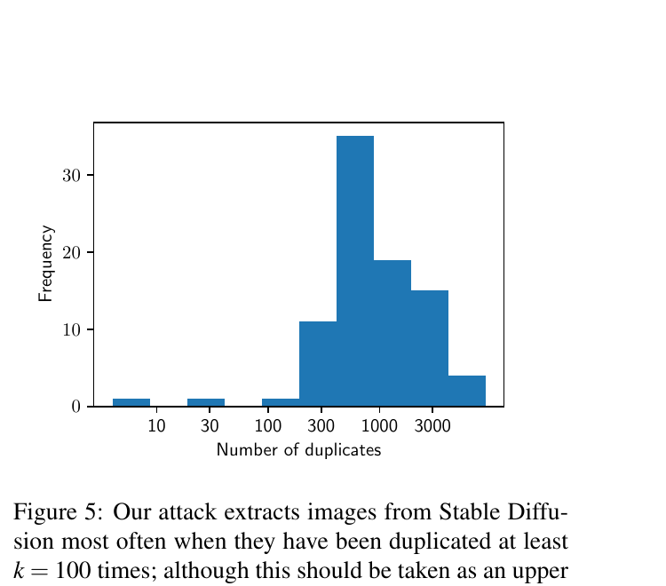
- ~94 confirmed verbatim extractions out of 175M generations
- Almost all memorized images had > 100 LAION duplicates
- Iconic case: "Ann Graham Lotz" portrait reproduced near-perfectly
Carlini 2023 — Gallery of Extractions
Top row: LAION training images. Bottom row: SD v1.4 generations from short prompts.
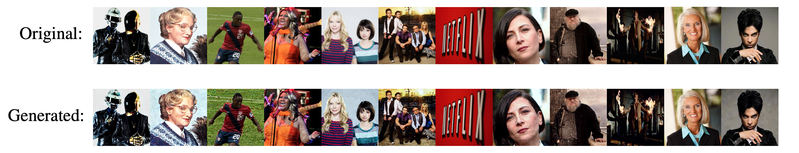
- Each pair is a verbatim or near-verbatim match
- Categories span portraits, characters, posters, branded content
- Memorization is not rare or isolated — it spans the visual vocabulary of the training set
Definition 2 — Similarity / Replication
Copy-detection descriptor $\phi: \mathcal{X} \to \mathbb{S}^{m-1}$ (SSCD), trained to be invariant to crop, blur, recolour.
Definition (replication at level $\tau$).
No prompt search: one nearest-neighbour query against the corpus.
What the Threshold Test Decides
$\tau$ sets the operating point; $\phi$ defines what "the same image" means.
Replication Detection (Somepalli 2023)
Quantify copy via SSCD (Self-Supervised Copy Detection) descriptors. Top row: SD generations; bottom row: top-1 LAION match.
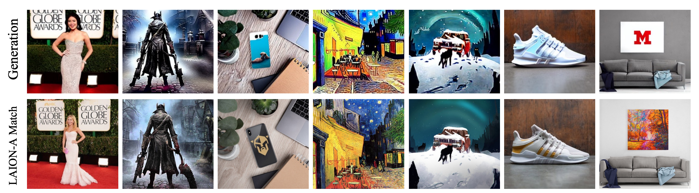
- Generation and top-1 match are visually indistinguishable — verbatim replication
- RTA (Random Token Addition) / RNA (Random Number Addition) mitigations break the collapse
Somepalli — Similarity Distribution
Compare SSCD similarity sim(gen, train) vs sim(train, train) as training set grows:
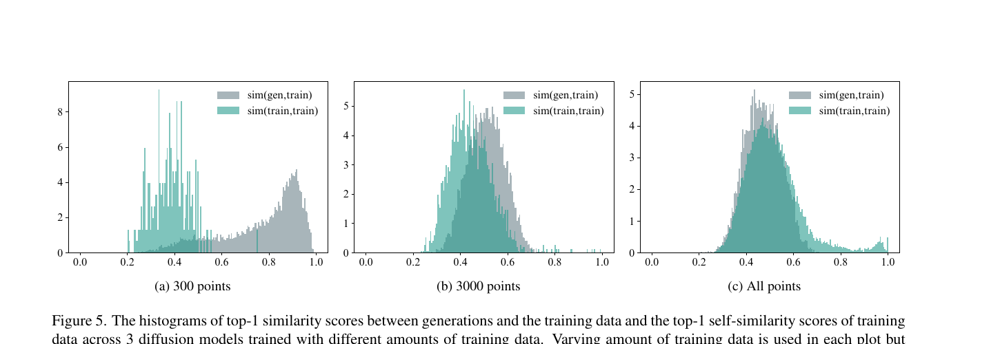
- Small training set: generations collapse onto duplicates — gen $\gg$ train self-similarity
- Full training set: distributions overlap — copying confined to a tail
Reproducible Extraction (Webster 2023)
500 memorized prompts for SD v1.4 + 219 for SD v2.0. Three verbatim categories:
Matching Verbatim
Generated image $\approx$ a single LAION training image.
Example: celebrity portraits, book covers, logos.
Retrieval Verbatim
Composite of several training images.
Example: stock photo arrangements, character merch.
Template Verbatim
Same layout / template, different content.
Example: posters, magazine covers, repeated frames.
Public prompt set $\Rightarrow$ third-party detection and mitigation can be benchmarked.
Definition 3 — The Taxonomy, Formally
Generation $\hat{x}$, corpus $\mathcal{D}$, tolerance $\delta$, content-removing map $T$ (layout only):
MV is a point test; RV quantifies over partitions; TV quotients by content.
Three Ways to Copy
One similarity threshold, three very different failure modes.
Three Definitions, Three Objects
| Definition | Quantifier | Needs access to | Blind to |
|---|---|---|---|
| Extraction | exists a prompt | model + attack | copies no prompt reaches |
| Similarity | for the nearest neighbour | full training corpus | how the copy was built |
| Structure | exists a decomposition | corpus + region matcher | frequency, prompt cost |
A model can be clean under one definition and leak under another.
Wen 2024 — Seed Tells the Story
Fix the seed, vary the prompt. Compare normal vs memorized prompts:
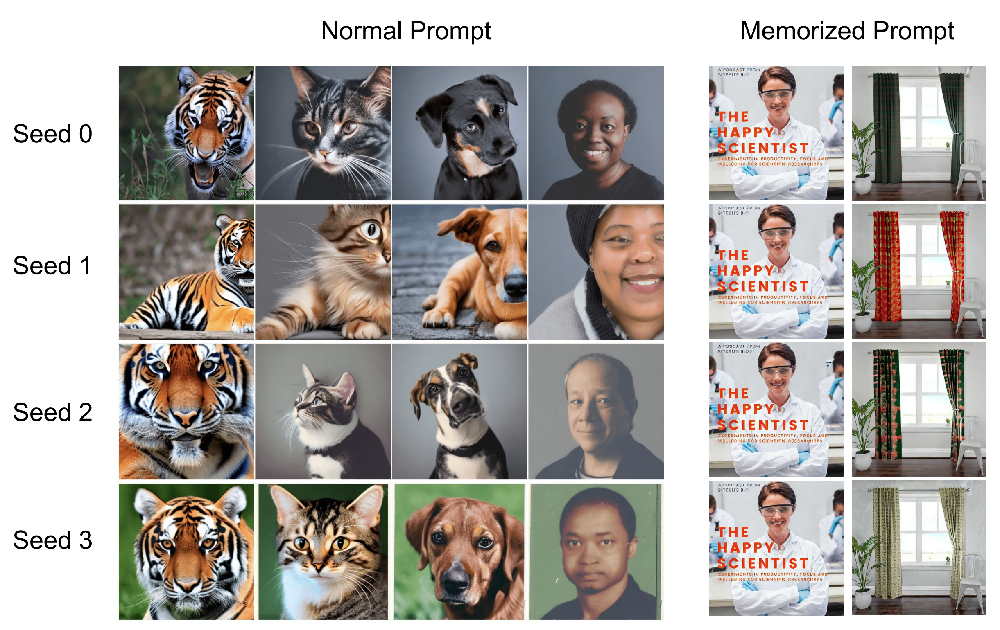
Wen 2024 — Reading the Seed Plot
- Normal prompts (tiger / cat / dog / portrait): seed controls structure, angle, lighting — same prompt yields a recognizable family of variations across seeds
- Memorized prompt ("The Happy Scientist" poster, the curtained-window scene): output ignores the seed — the model produces the same training image every time
- Independence from initialization is itself a memorization signature
Memorization $\Leftrightarrow$ the prompt embedding overwhelms the noise; the trajectory becomes deterministic in $c$.
Recall — Guidance and the Score
Recall (classifier-free guidance). One network, two calls, linear mix:
Recall (score / noise duality). At noise level $t$:
The guidance direction is a score difference, up to a known scale.
Definition — Wen's Detection Statistic
Definition (guidance magnitude).
- Model-only: no corpus, no nearest-neighbour search
- Detects at any step, including the first
- Introduced as a heuristic — the next slides explain it
The Gap Is an Implicit Classifier
Proposition (implicit classifier gradient).
If $s_\theta$ matches the true scores, then for every $x_t$ and every condition $c$,
The guidance direction is the gradient of the log-likelihood of the prompt given the image.
Proof — Bayes at Noise Level $t$
Key trick: $p(c)$ is constant in $x_t$, so it dies under $\nabla_{x_t}$.
Why Memorization Inflates the Gap
Local Gaussian model at level $t$, shared mode $\mu$:
Memorized prompt: conditional collapses onto one image, $\sigma_{i,c} \to 0$, the gap diverges.
Guidance as a Vector Gap
$s^\Delta$ = the prompt's pull. Memorization stretches it.
Wen — Verbatim Memorization

- All four generations identical to the training image
- $\|s_\theta^\Delta\|$ spikes sharply at the final denoising steps
- Metric value $\gg$ non-memorized baseline
Wen — Partial Memorization

- Generations share dominant elements with training but vary in details
- $\|s_\theta^\Delta\|$ elevated but lower than verbatim case
- Intermediate metric value — threshold choice matters
Wen — Non-Memorized (Regular)

- Each generation differs — no anchoring training image
- $\|s_\theta^\Delta\|$ stays flat and low across all $t$
- Metric clearly separates from the memorized cases
Aggregate Magnitude Separates Cleanly (Wen Fig 2)
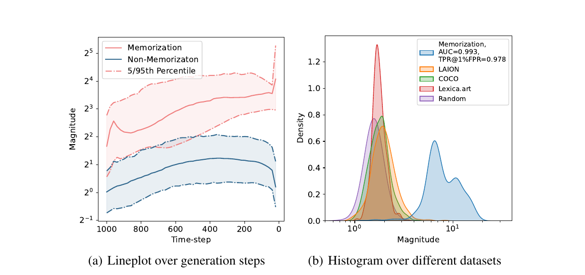
- Left: aggregate $\|s_\theta^\Delta\|$ over time-step — memorized stays $4\!-\!8\times$ above non-memorized across all $t$
- Right: density over LAION / COCO / Lexica / random — memorized forms a clearly separated mode (AUC 0.993)
Wen 2024 — Three Empirical Findings
- Early-step signal. Magnitude gap visible from the first denoising step — no need to sample to completion
- Initialization irrelevance. Generations from memorized prompts converge to the same image across initializations — trajectory determined by prompt embedding
- Mitigation by suppression. Add a negative-magnitude term to the loss at inference — reduces memorization without retraining
Score difference $\|s_\theta^\Delta\|$ is the cheap proxy used everywhere downstream.
Wen — Mitigation by Suppression
Penalize $\|s_\theta^\Delta\|$ at inference. Top: original memorized output; bottom: after suppression.
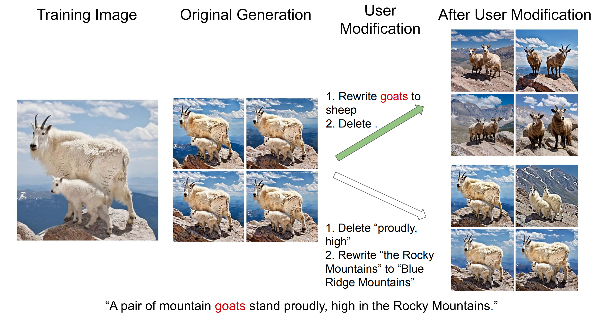
Wen Mitigation — What Changes
- Before: all seeds collapse to the training image — verbatim copy at every seed
- After: outputs respect the prompt while sampling diverse variations across seeds
- No retraining: only an inference-time loss term on the score-difference magnitude
- Prompt unchanged: user intent preserved; only the noise prediction is shaped
Suppressing the magnitude removes the deterministic anchor that the memorized prompt installs.
Definition — Local Intrinsic Dimension
Definition (LID by small-ball scaling).
For $X \sim p$ on $\mathbb{R}^D$ and a point $x$ in the support,
Ambient $D$ fixed; the exponent is local, and is what the model learns.
Reading the Exponent
Memorization is the degenerate end of the ladder: zero free directions.
Estimating LID — Nearest-Neighbour MLE
Small-ball neighbours: Poisson process, rate $\propto r^{k-1}$. Maximize its likelihood in $k$:
- Hill-type estimator: log-ratios of order statistics
- Neighbours on a shell: estimate blows up. Tight cluster: estimate collapses
Geometric View — LID (Ross 2024)

LID of a generated sample, estimated from the model itself.
- $\text{LID} \approx 0$: pure copy of a training point
- Small LID: partial / approximate memorization
- Moderate LID: generalized sample on the manifold
- Manifold poorly fit: LIDs become uninformative
Limit: sharp only at the final step $t \approx 0$.
Our Method: SAIL
Hessian eigenvalues · score-norm justification · noise optimization
From Dimension to Curvature
LID is estimated at $t \approx 0$ only. Diffusion gives us something better at every $t$:
Forward process = Gaussian smoothing. Curvature of $\log p_t$ becomes computable, and reads off the dimension.
Next: make this exact on a $k$-plane, where everything is in closed form.
Setup — A Density on a $k$-Plane
$p_0$ supported on a $k$-dimensional affine subspace $V \subseteq \mathbb{R}^D$; smoothed by the forward kernel:
Smoothing a Thin Support
Theorem (spectrum of a smoothed low-dimensional density).
With the setup above, for every $x$,
in the split $\mathbb{R}^D = V \oplus V^\perp$, where $q_\sigma$ is $p_0$ smoothed within $V$.
Exactly $D-k$ eigenvalues equal $-\sigma^{-2}$; the other $k$ stay bounded as $\sigma \to 0$.
Proof Outline
- Split the convolution. Pythagoras: Gaussian $=$ normal factor $\times$ tangential factor.
- Take logarithms. Product $\to$ sum: one term in $x_\perp$, one in $x_V$.
- Differentiate twice. Separated variables $\Rightarrow$ block-diagonal Hessian, quadratic normal block.
Key trick. The isotropic Gaussian factorizes across every orthogonal split, forcing the normal block to $-\sigma^{-2} I$.
Step 1 — Split the Convolution
For $y \in V$: $x - y = (x_V - y) + x_\perp$ with the two parts orthogonal, so $\|x-y\|^2 = \|x_V - y\|^2 + \|x_\perp\|^2$. Hence
The normal coordinate leaves the integral: it is the same for every $y \in V$.
Step 2 — Logs, Then Two Derivatives
First term depends only on $x_\perp$, second only on $x_V$: all mixed second derivatives vanish.
Proof Recap
Curvature separates into "along the data" and "across the data".
Two Corollaries
Corollary 1 (dimension read-off).
Corollary 2 (a memorized point).
$p_0 = \delta_{x_0}$ gives $k = 0$, $p_\sigma = \mathcal{N}(x_0, \sigma^2 I)$, so $\ \mathrm{tr}\, H = -D/\sigma^2$: every direction maximally sharp.
The trace of the Hessian counts codimension. That is the quantity SAIL estimates.
Sharp Spike vs Broad Basin
Sharpness is not a metaphor here: it is the eigenvalue magnitude of $\nabla^2 \log p_t$.
Sharpness in the Probability Landscape

Memorized prompts — sharp, isolated peaks in $\log p_t(x \mid c)$. Non-memorized — smooth basins.
Sharpness of $\log p_t$ — Definition
Hessian of the log-density (Jacobian of the score):
- Eigenvectors: principal axes of curvature
- Negative eigenvalues: local concavity (peaked density)
- Large $|\lambda|$: steep change in $\log p_t$
Sharpness = magnitude of negative eigenvalues of $H(x_t)$.
Why the Hessian Measures Sharpness
Gaussian intuition. For $x \sim \mathcal{N}(\mu, \sigma^2)$:
- Small $\sigma$ ⇒ $H$ strongly negative ⇒ sharp peak (narrow mode)
- Large $\sigma$ ⇒ $H \approx 0$ ⇒ flat basin (diffuse mode)
- Multivariate: $H = -\Sigma^{-1}$ — eigenvalues = $-1/\sigma_i^2$ along each principal axis
Mode concentrated on one image $\Rightarrow$ tiny $\sigma_i$ $\Rightarrow$ large negative eigenvalues.
Eigenvalue Concentration — Stable Diffusion

Reading the SD Eigenvalue Plots
- Exact Mem (top row): heavy negative-eigenvalue tail at both $t=T-1$ and $t=1$ — persistent sharp peaks
- Partial Mem (middle): moderate tail at $t=T-1$, narrows at $t=1$
- Non Mem (bottom): eigenvalues near zero throughout — smooth basin
- Separation is visible at the very first sampling step ($t=T-1$) — no need to sample to completion
Sharpness stratifies memorization categories from the first denoising step.
Eigenvalue Concentration — MNIST
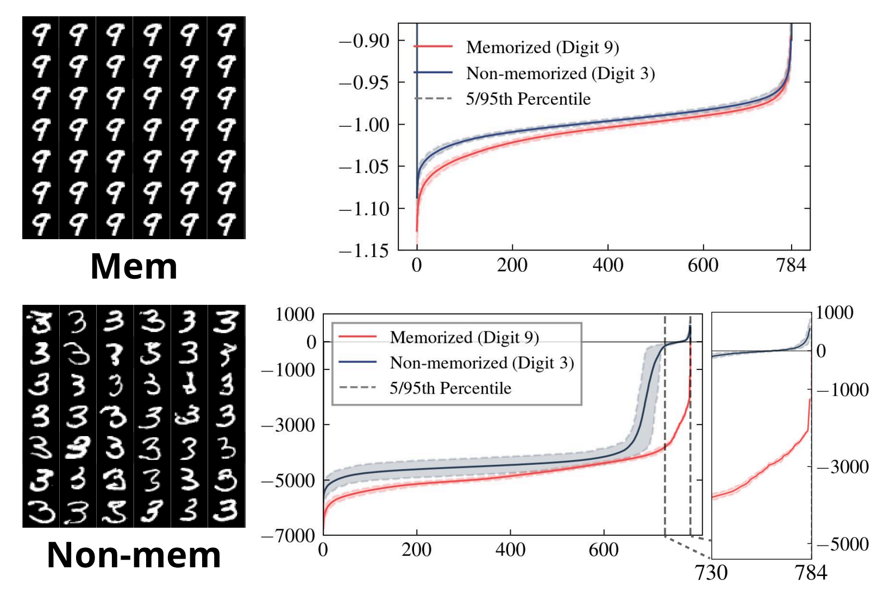
MNIST: digit 9 inserted once (mem), digit 3 abundant (non-mem) — tails match SD.
The Local Gaussian Toolkit
Everything below is a local Gaussian model of $p_t$ around the current latent.
Sharp direction = large $\Lambda_i$. Signs: eigenvalues of $H$ are negative throughout.
One Lemma Powers All Three
Lemma A (quadratic form).
For $z \sim \mathcal{N}(0, \Sigma)$ and any matrix $A$: $\ \mathbb{E}\big[\|Az\|^2\big] = \mathrm{tr}\big(A \Sigma A^\top\big)$.
Key trick: turn a norm into a trace, then move the expectation inside.
Score Norm as Sharpness
The full spectrum is intractable in latent space ($D = 16{,}384$). One number is not.
Lemma 4.1 (Jeon, Kim, No 2025).
For $x \sim \mathcal{N}(\mu, \Sigma)$ with $H = -\Sigma^{-1}$:
A single forward pass estimates the whole trace.
Proof of Lemma 4.1
Put $z = x - \mu \sim \mathcal{N}(0,\Sigma)$, so $s(x) = -\Sigma^{-1} z$. Apply Lemma A with $A = \Sigma^{-1}$:
Read with Corollary 1: the score norm counts the codimension of the support.
Not Only for Gaussians
Proposition (score norm = negative Laplacian).
For any $C^2$ density with $p\,\nabla \log p \to 0$ at infinity,
Proof: $\partial_i p = p\,\partial_i \log p$, then integrate by parts in coordinate $i$ and sum:
Setup — Conditional vs Unconditional
Same mode $\mu$, commuting covariances $\Rightarrow$ one shared eigenbasis $\{u_i\}$, two precision spectra $\Lambda_i, \Lambda_{i,c}$.
Key identity: the score gap is the curvature gap applied to the displacement.
Wen's Metric Is a Sharpness Measure
Lemma 4.2 (Jeon, Kim, No 2025).
Under the setup above, with $x \sim p(\cdot \mid c)$:
Wen's heuristic measures a squared eigenvalue gap between conditional and unconditional curvature.
Proof of Lemma 4.2
Apply Lemma A to $s^\Delta = H^\Delta z$ with $z \sim \mathcal{N}(0, \Sigma_c)$, then diagonalize in $\{u_i\}$:
Memorized prompt: $\Lambda_{i,c} \to \infty$, so each term grows like $\Lambda_{i,c}$.
Why the Gap Is Weak at the First Step
Grey: unconditional $\Lambda_i$. Blue: conditional $\Lambda_{i,c}$. Schematic. Detection at step 1 needs amplification.
Hessian-Score Product — Cubic Amplification
Lemma 4.3 (Jeon, Kim, No 2025).
For $x \sim \mathcal{N}(\mu, \Sigma)$:
Multiplying the score by the Hessian cubes the precision spectrum.
Proof of Lemma 4.3
$H s(x) = (-\Sigma^{-1})(-\Sigma^{-1} z) = \Sigma^{-2} z$. Apply Lemma A with $A = \Sigma^{-2}$:
Sharp directions dominate cubically; flat directions are suppressed cubically.
A Ladder of Metrics
Proposition (moment ladder).
For every integer $m \ge 0$, with $x \sim p(\cdot \mid c)$,
Proof: $s^\Delta = H^\Delta z$, so $(H^\Delta)^m s^\Delta = (H^\Delta)^{m+1} z$; Lemma A with $A = (H^\Delta)^{m+1}$ and the shared basis. $\blacksquare$
$m = 0$ recovers Wen. $m = 1$ is the next rung, and the cheapest one to compute.
Proposed Detection Metric
With $H^\Delta = H_\theta(x_t,c) - H_\theta(x_t)$ and $s^\Delta = s_\theta(x_t,c) - s_\theta(x_t)$:
Quartic eigenvalue gap: the same signal Wen uses, raised to the fourth power.
What the Metric Sees
$s^\Delta$ points along directions where the prompt disagrees with the prior.
$H^\Delta$ re-weights each direction by its curvature disagreement.
Squaring the product raises every weight to the fourth power.
One dominant sharp direction is enough to separate memorized from regular. Schematic.
The Three Lemmas in One Line
Theory Matches Practice
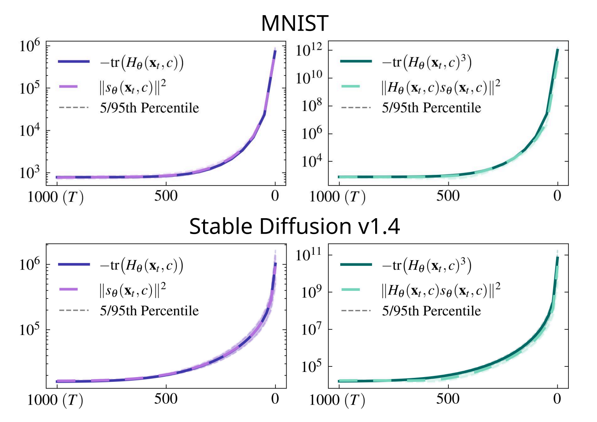
Top: MNIST. Bottom: SD v1.4. Left: $\|s_\theta\|^2 \approx -\mathrm{tr}(H)$. Right: $\|Hs\|^2 \approx -\mathrm{tr}(H^3)$.
Detection Results — Stable Diffusion
500 memorized prompts (Webster) vs 500 non-memorized (COCO / Lexica / Tuxemon / GPT-4).
SD v1.4, $n = 4$, step 1
Wen: AUC 0.832 / TPR@1% 0.124
Ours: AUC 0.998 / TPR@1% 0.982
SD v2.0, $n = 4$, step 1
Wen: AUC 0.851 / TPR@1% 0.000
Ours: AUC 0.991 / TPR@1% 0.949
One Hessian-vector product, one step — matches Wen's full 50-step performance.
SAIL — Mitigation by Initialization
DDIM is a deterministic noise-to-image map.
Sharp $x_T$ ⇒ sharp trajectory ⇒ memorized image.
Search instead for $x_T$ in a smooth region of $p_T(\cdot \mid c)$.
$p_G$: isotropic Gaussian prior, $\alpha$: prior weight.
No retraining, no prompt edit — only the seed moves.
Taylor Approximation
The Jacobian of the score gap is the curvature gap: $\ \nabla_x s^\Delta(x) = H^\Delta(x)$.
So $H^\Delta s^\Delta$ is the directional derivative of $s^\Delta$ along itself:
One extra forward pass at finite $\delta$. No second-order autograd.
Final SAIL Objective
- Initialize $x_T \sim \mathcal{N}(0, I)$
- Adam steps on $\mathcal{L}_{\text{SAIL}}$ at lr $0.05$
- Early stop on threshold $\ell_{\text{thres}}$ to keep $x_T$ Gaussian-typical
- Run normal DDIM with the optimized seed
Mitigation — Visual Examples
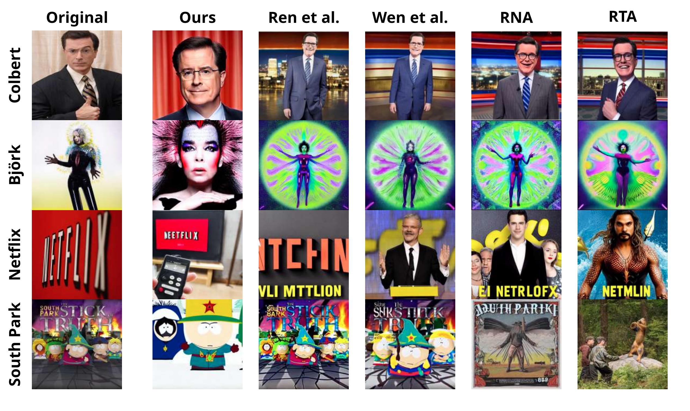
Ours — subject preserved, novel composition. Prior methods copy or break the prompt.
Mitigation Results — Quality vs Memorization

Lower SSCD = less copy. Higher CLIP = better prompt fidelity.
- SAIL (ours): bottom-right corner across both SD versions
- RTA / RNA / Wen / Ren cluster up and to the left — SSCD drops only by trading prompt alignment
- Seed-only intervention: prompt and weights untouched
Best Pareto front on SSCD vs CLIP — user intent fully preserved.
CLIP Embeddings Drive Memorization
Padding tokens, not prompt tokens, do the work
How CLIP Is Trained — Contrastive Image/Text
Batch of $N$ image-caption pairs $(I_i, T_i)$. Encoders $f_{\text{img}}, f_{\text{txt}}$ produce vectors $u_i = f_{\text{img}}(I_i),\; v_i = f_{\text{txt}}(T_i)$.
- Pull matched $(u_i, v_i)$ together; push mismatched pairs apart
- Text encoder is causal — only one vector per caption is compared with the image
$\langle$EoT$\rangle$ Is the Only Token CLIP Optimizes
Contrastive text vector $v_i$ = the last-position embedding: the $\langle\text{EoT}\rangle$ slot.
- Causal self-attention ⇒ $\langle\text{EoT}\rangle$ attends over all prompt tokens, others do not see it
- Gradient from $\mathcal{L}$ flows back only through $e_{\langle\text{EoT}\rangle}^{(L)}$
$\langle\text{EoT}\rangle$ carries the entire semantic signal. Prompt tokens are intermediate state.
Cross-Attention in Stable Diffusion
U-Net feature $\phi(x_t) \in \mathbb{R}^{HW \times d}$; CLIP text embeddings $E = [e_1, \ldots, e_{77}]$. Cross-attention:
- Each spatial location is a weighted sum over the 77 token embeddings
- If $\mathrm{softmax}$ concentrates on one token $k$, that token's $v_k$ steers the pixel
- The token with the largest attention mass drives generation
High attention on token $k$ ⇒ generation is dominated by $e_k$.
SD Text Conditioning — Tokenize, Encode, Attend
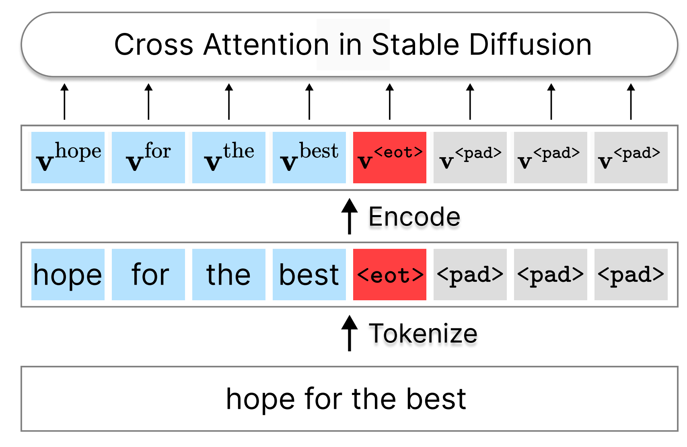
- Prompt tokens $v^{\text{pr}}$ — carry user content
- $\langle\text{EoT}\rangle$ — the only embedding optimized in CLIP contrastive loss
- $\langle\text{pad}\rangle$ slots = $\langle\text{EoT}\rangle$ — many copies of the trained vector
Padding Embedding $\approx$ EoT Embedding
SD's tokenizer pads with the EoT id. CLIP is causal:
- Padding slots inherit the EoT representation almost identically
- One trained vector ($e_{\text{EoT}}$) is replicated across $\sim 60$ slots
- Cross-attention over-weights this vector during generation
For memorized prompts: prompt-token embeddings contribute negligibly.
Mechanism — Mass Collapses onto One Direction
Proposition (padding amplification).
Slots split as prompt $P$, EoT, pad set $\mathcal{G}$. If $e_k = e_{\text{EoT}}$ on $\mathcal{G}$:
Identical embeddings give identical keys, hence identical logits, hence equal softmax weights.
In SD, $|\mathcal{G}|$ reaches $\sim 60$ for a short prompt.
Seventy-Seven Slots, One Vector
Padding is not inert: it is the same vector, counted $|\mathcal{G}|$ extra times.
Attention Drop — Pad / EoT Dominates
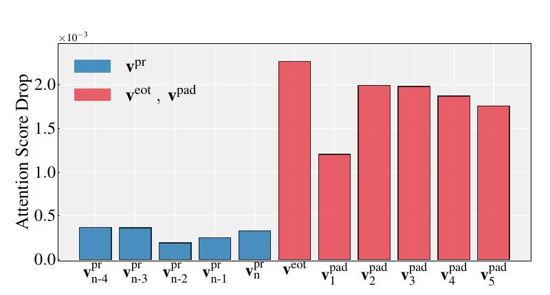
Replace $\langle$pad$\rangle$ with neutral !; measure attention-score drop per slot.
- Prompt tokens $v^{\text{pr}}$: tiny drop — do not steer generation
- $v^{\text{eot}}$ and $v^{\text{pad}}$: 5–7$\times$ larger drop
- Memorization signal lives entirely in EoT + padding slots
CLIP-Pad — Mitigation Restores Diversity
Same prompt, same model. Left: SD v1.4 default. Right: pad replacement + EoT masking.
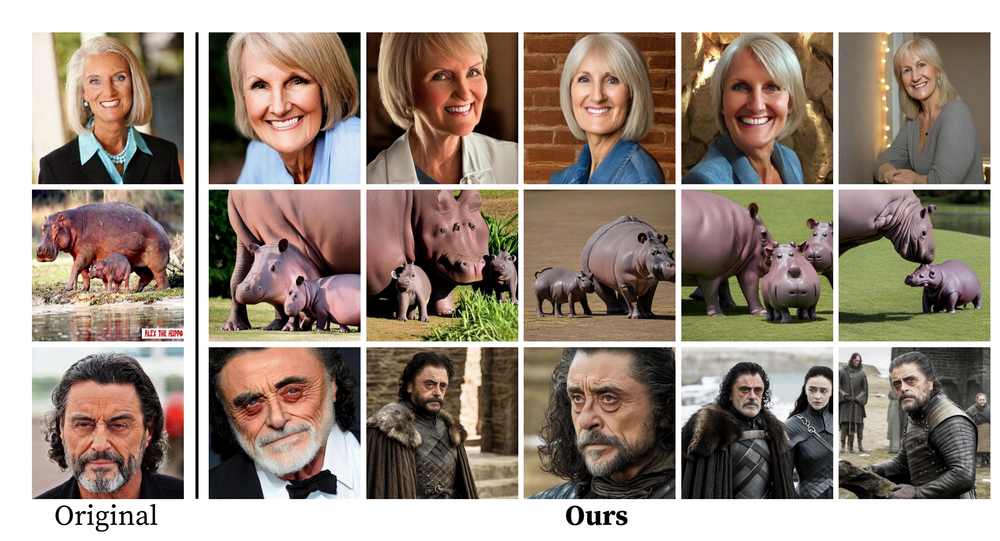
- Original: verbatim copy across seeds · Ours: diverse, subject preserved
Mitigation I — Replace Pad + Mask EoT
- Repoint the pad id from $\langle\text{EoT}\rangle$ to a neutral token (e.g.
!) - Mask the EoT slot in cross-attention (zero its key and value)
The amplification factor is removed at the source. No retraining, no prompt edit.
Mitigation II — Partial Padding Mask
Lighter intervention: keep the tokenizer, mask padding slots beyond a cutoff $m$.
- One knob interpolating between default SD and full masking
- Reduces SSCD copy on Webster's memorized prompt set
- Drop-in at inference; CLIP prompt alignment preserved
Bridge to LLM Memorization
Why LLMs need their own framework — Part II
Why a Separate Framework for LLMs?
Diffusion
Continuous latent, score $\nabla\log p_t$ in closed form.
Per-sample geometric signal (Hessian sharpness).
Output: image — perceptual similarity (SSCD, CLIP).
Autoregressive LLM
Discrete tokens, sequential probability product.
Per-string combinatorial signal (extractability).
Output: text — exact match, perplexity, $n$-gram.
The extraction definition transfers verbatim. Similarity and curvature do not.
What's Coming in Part II
- Defining memorization. Zhang 2017 capacity, Carlini 2019 Secret Sharer, exposure, Feldman long-tail
- Extraction attacks. Carlini 2021 on GPT-2, scaling laws, Lee 2022 deduplication, Nasr 2023 divergence
- Modern MIA. Min-K%, Min-K%++
- Adversarial compression. ACR, MiniPrompt, compliance theatre
- Reality on the ground. Cooper 2025 books, Aerni 2024 non-adversarial reproduction
See memorization-llm.html.
Takeaways — Diffusion
- Three definitions: extraction, similarity, structure. Not interchangeable
- Thin support $\Rightarrow$ $D-k$ eigenvalues at $-\sigma^{-2}$: memorization is curvature
- Wen's heuristic $=$ squared eigenvalue gap; SAIL raises it to the fourth power
- CLIP-pad: one trained vector replicated across $\sim 60$ padding slots
- Legal stakes are live: Bartz, Getty, NYT, Disney
Thank you. · Part II: LLM memorization.